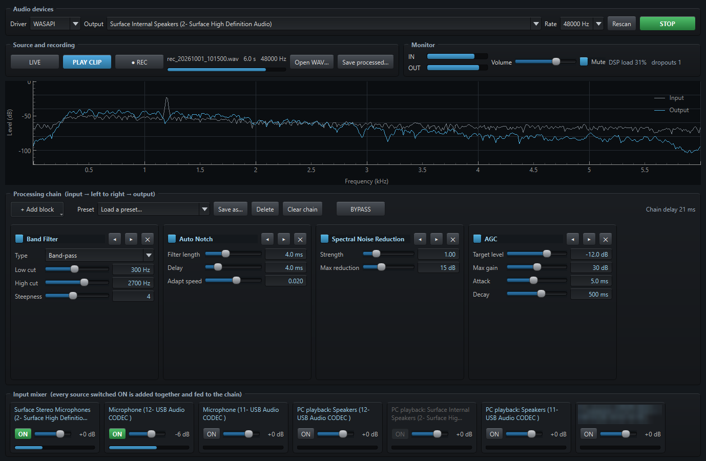
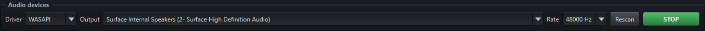

AUDIO PROCESSOR
A free Windows audio filter chain for radio amateurs. Mix a radio's USB audio, a microphone or whatever another program is playing, clean it up with filters, noise reduction and dynamics, and listen on any output.

A quick tour
Pick a part of the window to see it. These are real screenshots of the program.

What it does
Build the chain you want, hear the result straight away, and compare it with and without.
Mix several inputs
Radio USB codecs, microphones, line-in, and "PC playback" captures of what another program is playing, each with its own ON switch, fader and meter.
A chain of blocks
Add, reorder, bypass and remove filter, noise-reduction and dynamics blocks. Every slider takes effect immediately.
See what it does
A live spectrum shows the input in grey and the output in blue, so you can see each block's effect.
Record, then tune
REC captures the raw input, then loops the clip through the chain while you adjust the blocks. Save the processed result as a WAV.
BYPASS for A/B
One button skips the whole chain so you can compare with and without it.
Add your own blocks
One Python file per block, with its controls built automatically. A worked example is included.
The twelve blocks
The starter set, with SSB and narrow CW presets.
| Block | Type | What it does |
|---|---|---|
| Band Filter | Filter | Low-pass, high-pass or band-pass with adjustable edges and steepness |
| Notch | Filter | Removes one fixed tone |
| CW Peak | Filter | Narrow band-pass on the CW pitch |
| Auto Notch | Adaptive | Finds and removes steady tones by itself |
| LMS Noise Reduction | Adaptive | Keeps predictable signals such as tones and CW, drops random noise |
| Spectral Noise Reduction | Spectral | Learns the noise floor per frequency and turns down noise-only bins |
| AGC | Dynamics | Holds the output near a target level |
| Compressor | Dynamics | Reduces level above a threshold by a ratio |
| Limiter | Dynamics | Hard ceiling on peaks |
| Noise Gate | Dynamics | Mutes the audio when it falls below a threshold |
| Parametric EQ | Tone | Low shelf, two sweepable mid bands, high shelf |
| Gain | Tone | Plain level change |
Get started
- Download
AudioProcessor-1.2-windows.zipfrom the latest release and unzip it anywhere. - Run
Audio_Processor.exe. The program is not code-signed, so Windows may say "Windows protected your PC". Click More info, then Run anyway. - Pick your output device, switch ON the input sources you want in the Input mixer, add some blocks, then press START. Keep the volume low and use Mute while you set up.
- Read the Audio Processor User Guide.pdf in the zip for a walk through the whole window.
Prefer Python? Run it from source: pip install -r requirements.txt then python run.py.
Privacy
Audio Processor has no server, no telemetry and no network use apart from an optional, switch-off-able check of GitHub for a newer release. The author receives nothing from your copy.
Audio stays on your PC
Everything is processed locally. Nothing is uploaded or sent anywhere.
Files beside the program
Settings, presets and recordings are stored in the folder next to the program.
Never transmits
It has no radio control and never keys a transmitter. Be careful where you route its output.
Disclaimer
Please read this before using Audio Processor. The full text is in DISCLAIMER.md.
No warranty
Audio Processor is a free hobby project provided "as is", without warranty of any kind, express or implied, under the MIT License. You use it entirely at your own risk.
Limitation of liability
To the maximum extent permitted by law, the author is not liable for any loss or damage of any kind arising from the use of, or inability to use, Audio Processor, including damage to equipment, data loss, hearing damage, injury or licence infringements.
Sound levels and hearing
The program can raise levels a long way, and a wrong setting or a feedback loop can be very loud. Start with the volume low, use Mute while you set up, and take care with headphones.
Connecting it to a radio
It is intended for receive audio. Routing its output into a radio's transmit audio input can make the radio transmit something you did not intend. Check what each device is connected to first. You are solely responsible for what is transmitted and for operating within your licence and your country's regulations.
Recording
Recording microphones or other people's conversations or transmissions may be restricted or need consent where you live. You are responsible for complying with the laws that apply to you.
Third-party software
Built with open-source libraries (Qt/PySide6, pyqtgraph, NumPy, SciPy, sounddevice/PortAudio, soundcard), each under its own licence. Not affiliated with or endorsed by any library author or radio manufacturer. Trademarks belong to their owners.